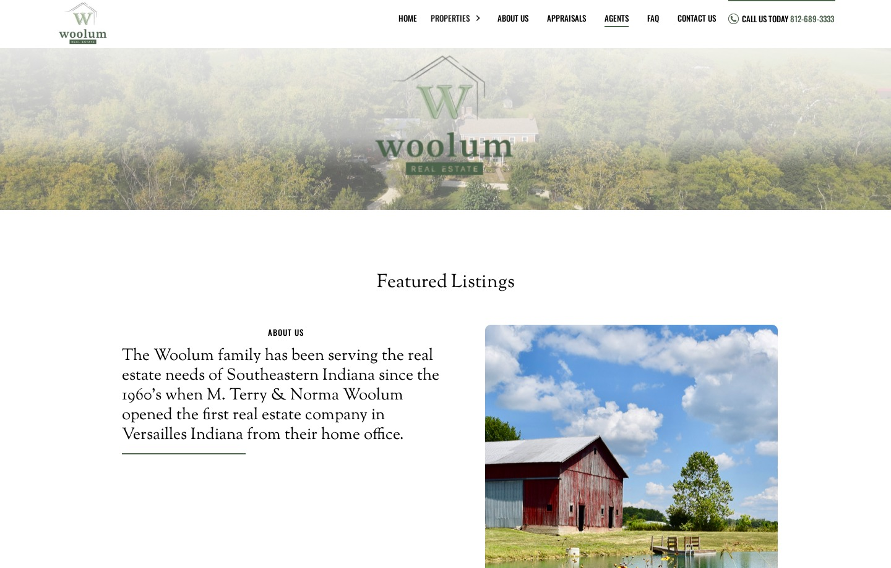
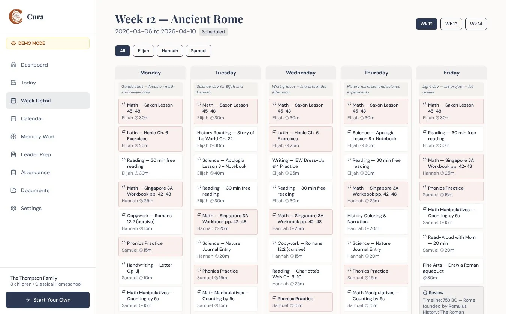
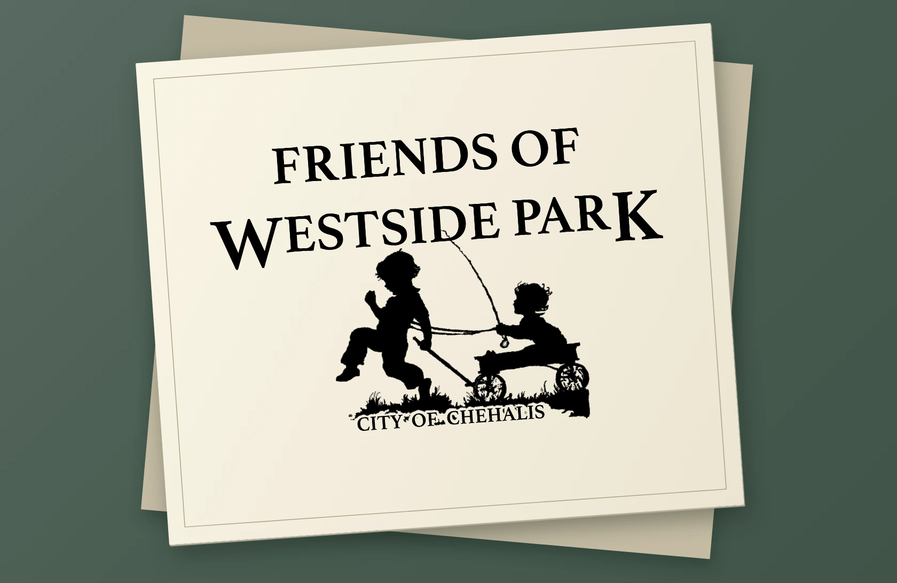
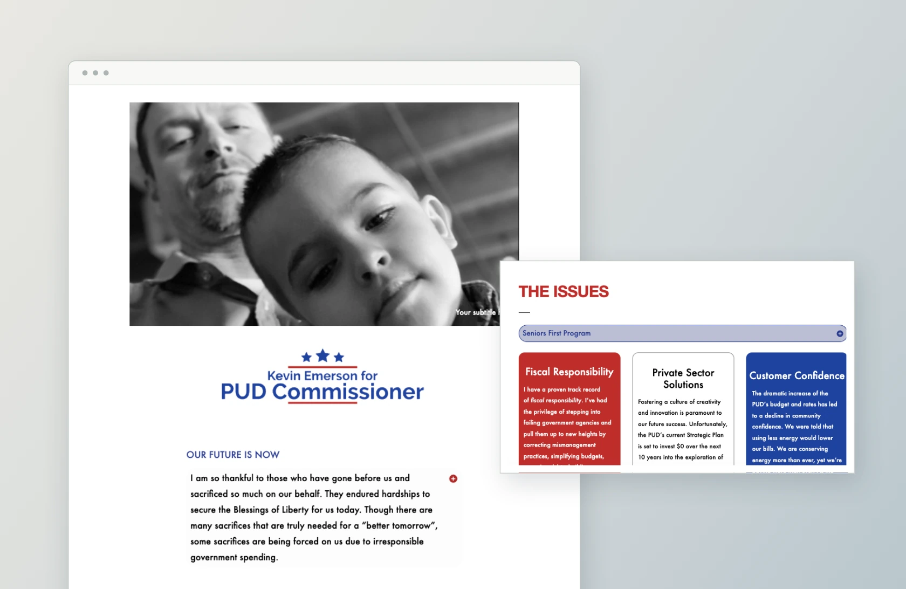

Real estate · Webflow redesign
Client websites, my work with JesusOnline Ministries, and a homeschool planner built for my family.

Real estate · Webflow redesign

Independent app · Homeschool planning
One-color cycling illustration shown as a print mockup.

The Chehalis park identity, presented as a print proof.

An archived campaign website for Kevin Emerson, with a closer look at its issues section.
Ongoing work on caching, asset delivery, and site protection for the websites I maintain.
Independent product exploration. A printable and fillable family reset kit organizes morning routines, shared jobs, and a weekly reset.